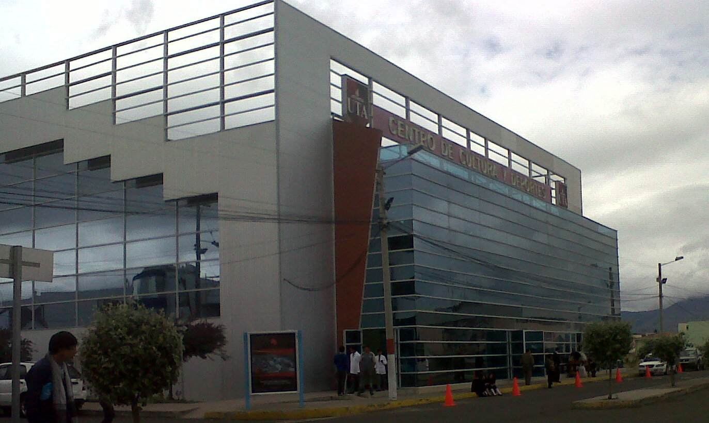
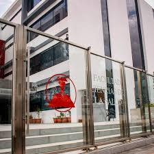
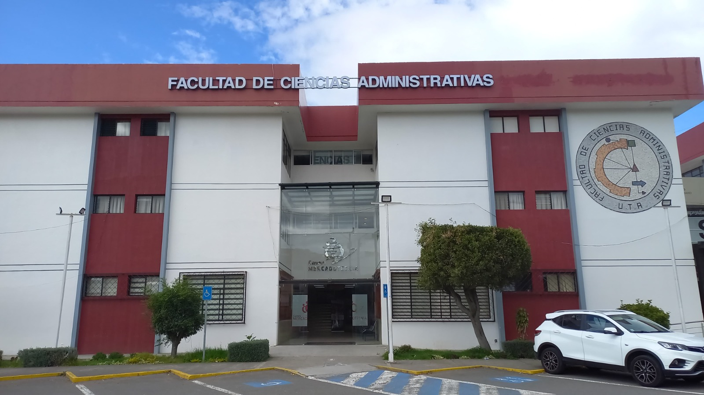

Nuestros Servicios
Conoce los principales servicios académicos y tecnológicos que ofrece FISEI-UTA.

Laboratorios
Espacios equipados para prácticas académicas, investigación y desarrollo de proyectos relacionados con software, electrónica, redes y automatización.
Ver más
Bibliotecas
Acceso a recursos bibliográficos, libros, tesis, documentos digitales y material de apoyo para fortalecer el aprendizaje y la investigación estudiantil.
Ver más
Administración de Redes
Gestión de infraestructura tecnológica, conectividad, soporte de red y servicios informáticos que respaldan las actividades académicas y administrativas.
Ver másCompromiso institucional
En FISEI-UTA trabajamos para brindar servicios modernos, eficientes y orientados al desarrollo integral de los estudiantes, docentes y personal administrativo.